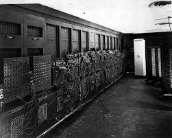

Computer Hardware
Processing
The Central Processing Unit is one the most important part to computers. There are two parts to the CPU which are the control unit, and the math/logic unit. The control unit is the part of the CPU that executes the programs. The control unit does this by communicating between input and output using buses. Buses are used between all components to communicate data. The user sends in data by executing a program and the computer outputs by running the program and displaying it. The math/logic unit carries out all of the operators for math. Simple operations are carried out in the math/logic unit like addition, subtraction, multiplication, and division. Logic operators are also carried out in the math/logic unit. Some examples include greater than/equals/smaller than operators, and the and/or/not gates. All of these operations that are used are temporarily stored(rememberd) in registers which is much faster than processing. The registers are used for efficiency if the computer has to carry out the same operation multiple times.Primary Storage
 Primary storage (memory) is the main storage known as RAM that stores the data and programs the CPU tells it to. The two types of RAM are static and dynamic. Static RAM is quicker but stores less. Dynamic RAM stores more but is slower. RAM is volatile which means it needs to be constantly re-energized otherwise it will lose all information. This means that primary storage stores information used by only running programs as long as the computer is on. The programs take up secondary storage when they are used or when the computer is shutdown. This process is called von Neumann architecture. John von Neumann was part of the team to create the first electronic computer called the ENIAC, and he is the one who came up with the von Neumann architecture.Secondary Storage
Secondary storage (storage) is not volitile, and the place where files and non-running programs are stored for a computer. The secondary storage types are magnetic, optical, and integrated circuit. Magnetic storage includes hard disks and floppy disks. Hard disks are divided into multiple platters that take shape of a concentric circle which are divided into equal sections that make up a disk block. Data is written and read in many blocks called clusters. Optical storage is CDs and DVDs. CDs and DVDs both have one track in the shape of a spiral. CDs and DVDs are read from the inside to the outside. Integrated circuit (IC) storage consists of USB sticks, SD cards and hard drives. IC storage can read and write data faster because it is static and does not move. IC storage can break down after thousands to hundreds of thousands of use in transferring data.Binary
Binary represents data on a computer which is a number system of 2. A sequence of binary numbers represents different characters, quantities, or symbols that are used by software. Electricity can run through switches when they are open. A lower voltage of electricity runs through switches when they are closed. 1 represents that a switch should be open and 0 represents that a switch should be closed.Input and Output
I/O, short for input and output, is how the computer interacts with the user. Input is the devices used to record/gather information from the user. Output is the devices that communicate with the user. There are many examples of input and output. Some of the main input devices include mouses and keyboards. Both of these input devices, if received input, will send data. This data will get sent to memory for the processor to handle. In a keyboard, each key sends in a byte of data (8 binary digits) identifying the key pressed. A mouse will sense if the user moved the mouse by using an LED/Laser and a camera that senses motion when the light reflects of a surface. One of the main output devices is the monitor. The monitor gets binary data on what to display. The images that get displayed are made of tiny little dots known as pixels.
Citations
Introduction to Computers. (n.d.). Retrieved September 01, 2017, from http://homepage.cs.uri.edu/faculty/wolfe/book/Readings/Reading01.htm
Data In The Computer. (n.d.). Retrieved September 01, 2017, from http://homepage.cs.uri.edu/faculty/wolfe/book/Readings/Reading02.htm
The CPU and Memory. (n.d.). Retrieved September 01, 2017, from http://homepage.cs.uri.edu/faculty/wolfe/book/Readings/Reading04.htm
Disks and Secondary Storage. (n.d.). Retrieved September 01, 2017, from http://homepage.cs.uri.edu/faculty/wolfe/book/Readings/Reading05.htm
Input and Output(n.d.). Retrieved September 01, 2017, from http://homepage.cs.uri.edu/faculty/wolfe/book/Readings/Reading06.htm
(n.d.). Retrieved September 01, 2017, from http://homepage.cs.uri.edu/faculty/wolfe/book/Readings/Reading07.htm
Computer & Information Literacy Web Site(n.d.). Retrieved September 04, 2017, from http://www.cs.scranton.edu/~cil102/cil102.html
The Arithmetic-Logic Unit. (n.d.). Retrieved September 04, 2017, from https://www.d.umn.edu/~gshute/logic/alu.xhtml
The Components of the System Unit. (n.d.). Retrieved September 04, 2017, from http://uwf.edu/clemley/cgs1570w/notes/Concepts-4.htm
What’s a Bus. (n.d.). Retrieved September 04, 2017, from
https://www.cs.umd.edu/class/sum2003/cmsc311/Notes/CompOrg/bus.html